Explore Catania
A Brief History
Catania was resettled repeatedly on the Ionian flank of Mount Etna, with Greek settlers, Roman colonists, and Norman rulers each rebuilding after lava flows and earthquakes. The devastating quake of 1693 prompted a baroque reconstruction using dark lavastone trim on pale limestone façades. Fish markets, Benedictine monasteries, and eighteenth-century theatres express how Sicily's second city tied volcanic agriculture, port trade, and university life to the eastern coast.
Attractions Map
Top Sights & Activities
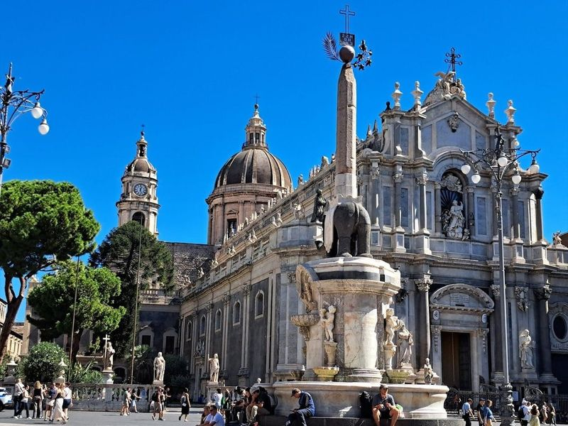
Fontana dell'Elefante (uʻ Liotru)
The Fountain of the Elephant in Catania is a significant landmark featuring a Roman statue of an elephant carved from basalt, serving as the symbol of the city. Situated at the heart of Piazza Duomo, it is surrounded by notable attractions such as Catania Cathedral and Via dei Cruciferi's Baroque buildings. The area offers a blend of historic architecture and picturesque views, creating a captivating atmosphere for travellers.
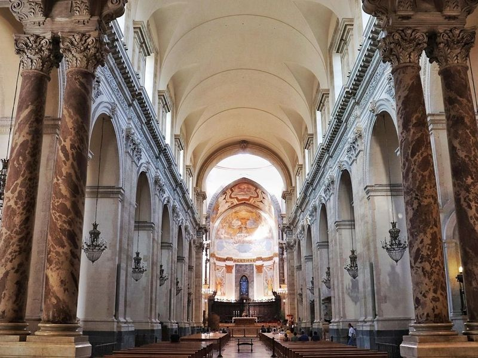
Basilica Cattedrale di Sant'Agata
The Basilica Cattedrale di Sant'Agata is a prominent baroque cathedral located in the lively main square of Catania. Designed by Giovanni Vaccarini, its columned facade and domed roof dominate the Piazza del Duomo. The cathedral houses the tomb of composer Vincenzo Bellini and features original Norman apses and a fresco depicting Catania's submission to Mount Etna's eruption.
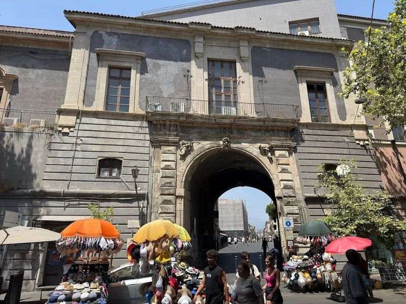
Porta Uzeda
Porta Uzeda, named after the duke of Uzeda, was built in 1696 as a city gate to honor the Viceroy. It connects the Seminario dei Chierici with the Cathedral and is located near the Basilica and a city park. The gate offers good views from its terrace over Piazza del Duomo and the port area. travellers can also access it by getting a ticket to the Diocesan Museum first.
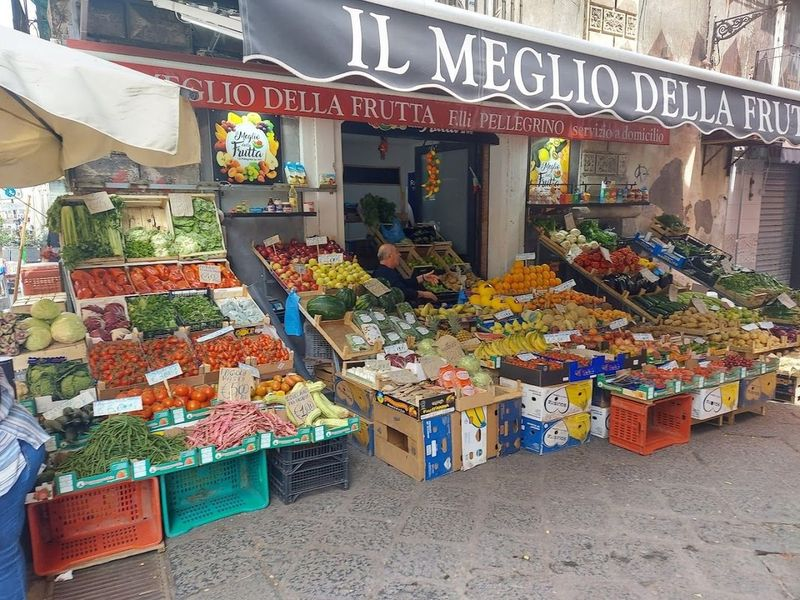
Catania Fish Market
Catania Fish Market is a lively and place in the heart of the city, attracting both locals and tourists. The market is a sensory overload with its coastal smells, colors, and the sounds of fishermen auctioning their fresh catch. travellers can expect to engage in friendly conversations with regulars while exploring the market under colorful umbrellas.
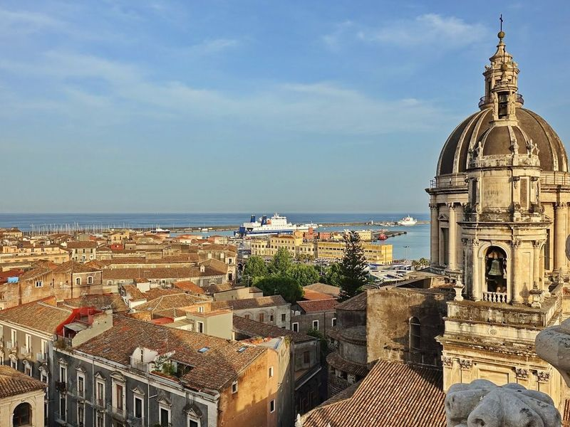
Chiesa della Badia di Sant'Agata
Chiesa della Badia di Sant'Agata is a Baroque church located in Catania, Sicily, Italy. Situated on the grounds of a Benedictine abbey, this 1700s church offers views of Mt. Etna from its dome. For a small fee, travellers can climb to the viewing platform and enjoy a 360-degree panoramic view of the historical center of Catania and the sea port.
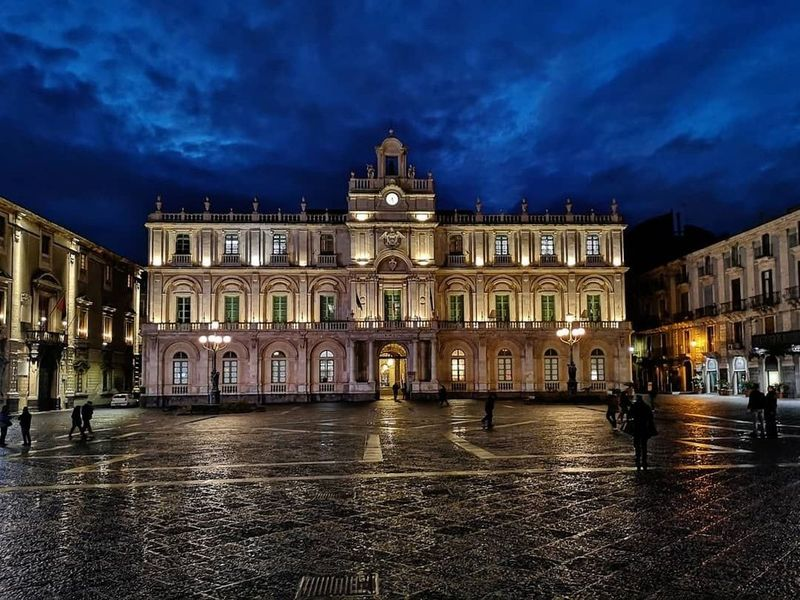
Piazza Università
Piazza Università is a square located in the historic city center of Catania, flanked by elegant 18th-century buildings and adorned with four bronze lampposts depicting local legends. The square offers a variety of activities during the day and evening, including shopping, dining at restaurants, and visiting the University of Catania. travellers can enjoy the spaciousness of the baroque square and admire the view of Mount Etna.
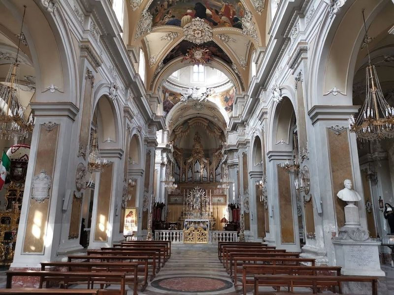
Basilica della Collegiata
in the heart of Catania, Italy, the Basilica della Collegiata stands as a testament to Sicilian Baroque architecture. Constructed in the early 18th century on the remnants of an earlier church lost to the catastrophic earthquake of 1693, this basilica showcases a baroque facade adorned with intricate sculptures and decorative details that reflect the artistic brilliance of its time.
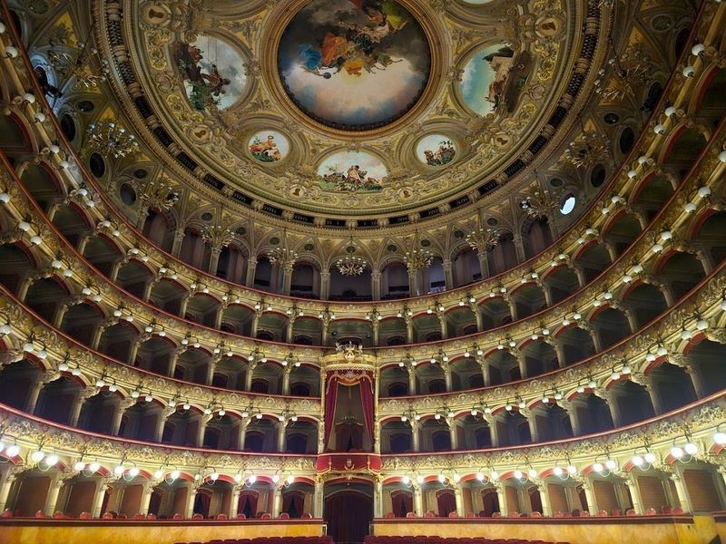
Massimo Bellini Theater
Teatro Massimo Bellini is a grand 19th-century theater adorned with intricate gold detailing, showcasing major operas and concerts. Dedicated to the renowned opera composer Vincenzo Bellini, this opulent Baroque venue offers public tours and hosts a diverse array of events throughout the year, including ballet, classical music, theater, and opera. Notably, it presents unique outdoor summer performances in Piazza Vincenzo Bellini against the backdrop of a square and fountain.
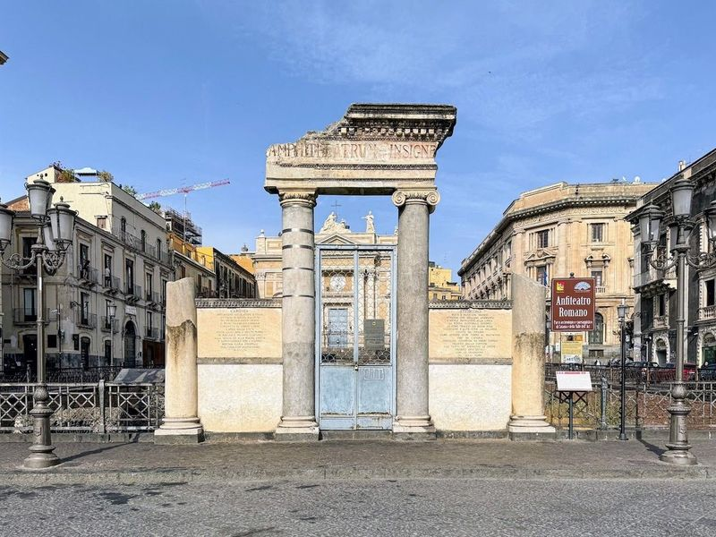
Roman Amphitheater of Catania
The Roman Amphitheater of Catania, located in Sicily, Italy, dates back to around 300 BCE and is a significant relic from the Roman Imperial period. Situated at the base of Montevergine hill, it is now partially submerged below ground level near Piazza Stesicoro. Despite being only a small section of its former grandeur, it remains an important part of Catania's ancient history.
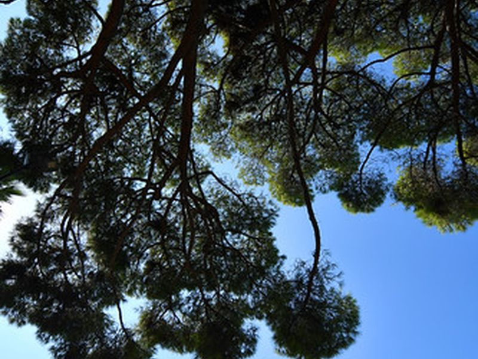
Villa Bellini/Chiosco Bellini
Villa Bellini is one of Catania's oldest urban parks, offering lush gardens, scenic views, and a quaint kiosk for refreshments. The site is catalogued as a tourist attraction. The site is catalogued as a tourist attraction. The site is catalogued as a tourist attraction.
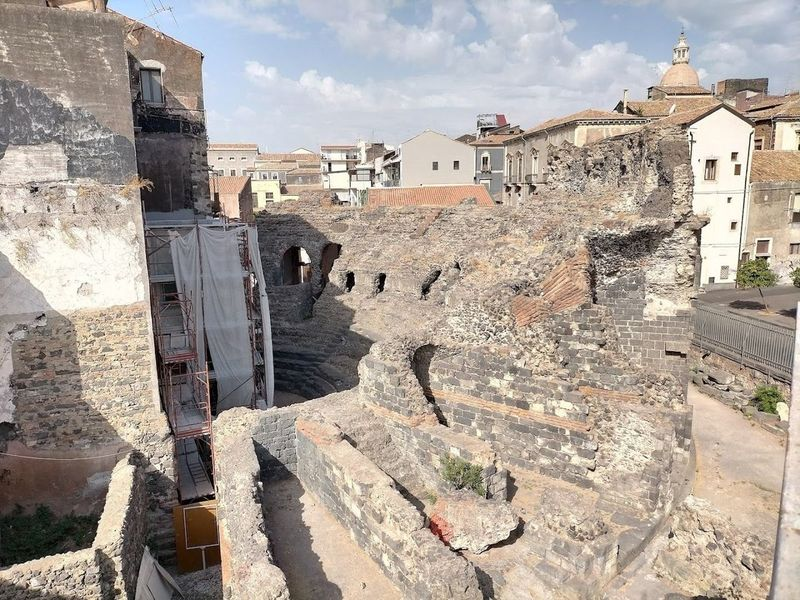
Teatro Antico greco-romano di Catania
The Greek - Roman theatre is a fascinating blend of ancient history and modern city life. The 3rd-century BC Ancient Greek theatre offers views of the coast and hosts performances that bring its history to life. Meanwhile, the Teatro Romano di Catania showcases how the city has evolved over time, with modern buildings towering over an excavated Roman theater from the 300s BCE.
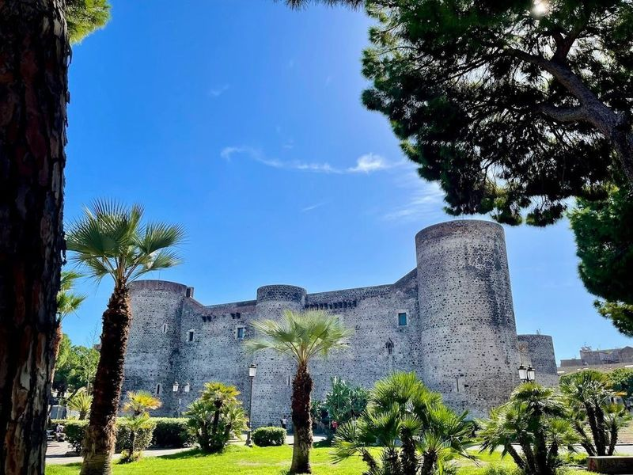
Ursino Castle
Ursino Castle, a 13th-century fortress in Sicily, was built by Emperor Frederick II and remains well-preserved. The castle features all four original towers and walls, along with remnants of surrounding walls within its grounds. travellers can explore the castle's interior to see the impressive Museo Civico, which houses royal archaeological collections, objects from a monastery, and painted carts.
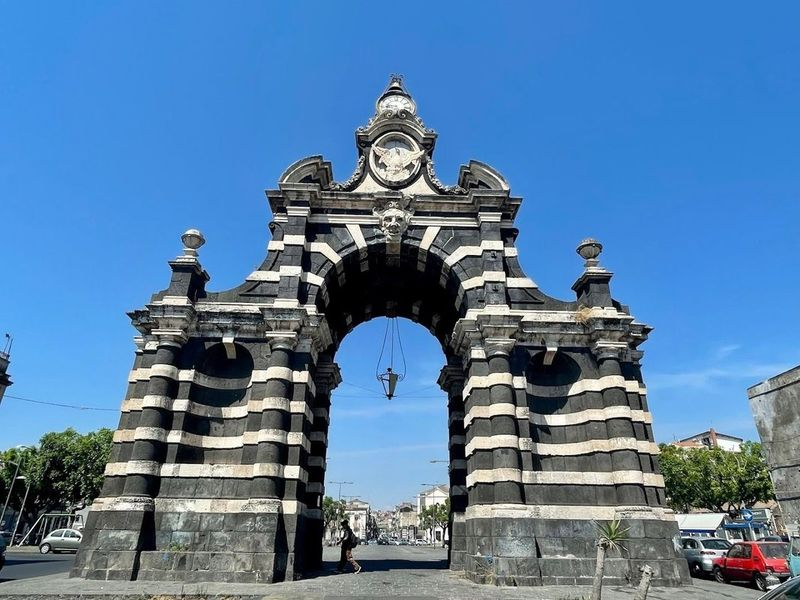
Porta Garibaldi
Porta Garibaldi is a monumental gate dedicated to King Ferdinand IV, located in the very center of Catania. It was constructed in the 1700s as a triumphal arch and offers a nice view of the cathedral. The surrounding area may be dirty, but the monument itself is well-preserved and worth visiting. To reach it, use scooter-sharing apps like Lime, Helbiz, or Dott.
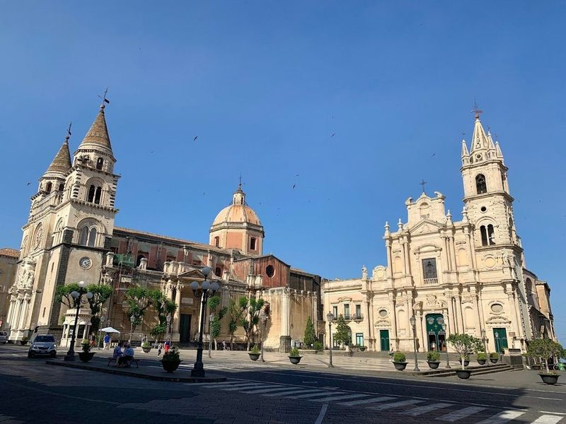
Basilica Cattedrale di Santa Maria Annunziata
Basilica Cattedrale di Santa Maria Annunziata, also known as Acireale Cathedral, is a 17th-century Roman Catholic cathedral located in the historic center of Acireale. Originally constructed as a parish church, it was later expanded to house the relics of Saint Venera. The cathedral boasts a unique blend of architectural styles with a neo-Romanesque facade and a Baroque interior featuring intricate details and ceiling frescoes.
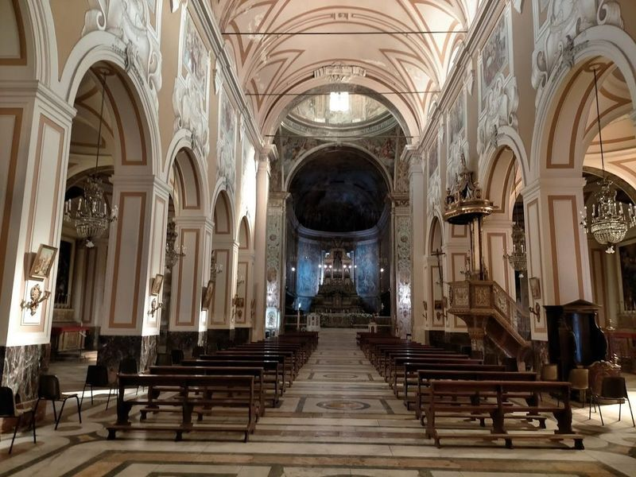
Basilica Collegiata di San Sebastiano
The Basilica Collegiata di San Sebastiano in Acireale, Italy is a cathedral dedicated to Saint Sebastian. The elaborate Baroque architecture and rich history make it a top tourist attraction. Intricate portrayals of Old Testament figures, cherubs, stained glass windows, and saints adorn the interior. The surrounding area is , with a lovely park nearby. travellers praise the divine details and Baroque-style decorations both inside and outside the cathedral.
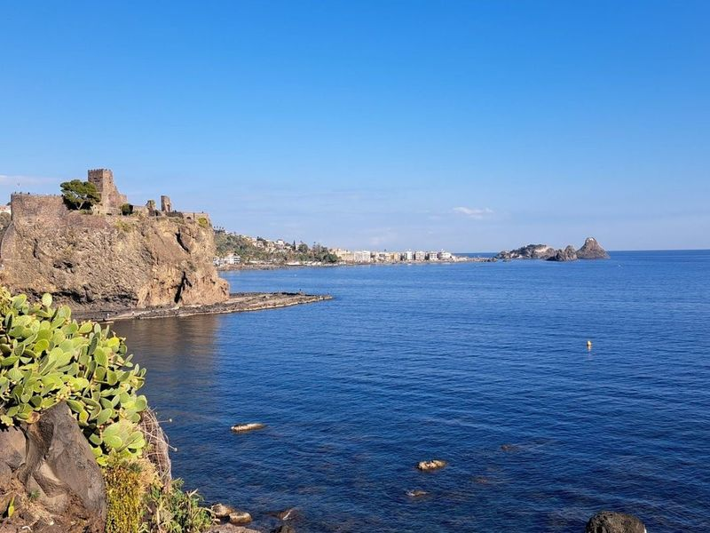
Castello Normanno - Svevo di Aci Castello
Castello Normanno - Svevo di Aci Castello is a ruined Norman stronghold perched on a dramatic seaside rock, offering exhibits on past battles and sieges. It's located in the serene town of Aci Castello, which is seeking relaxation in Sicily. The volcanic beach and picturesque surroundings make it an ideal getaway from the city chaos. While relatively small, the castle boasts centuries of history and offers a nice view of the sea and the city.